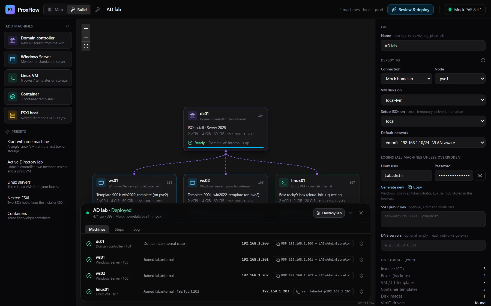
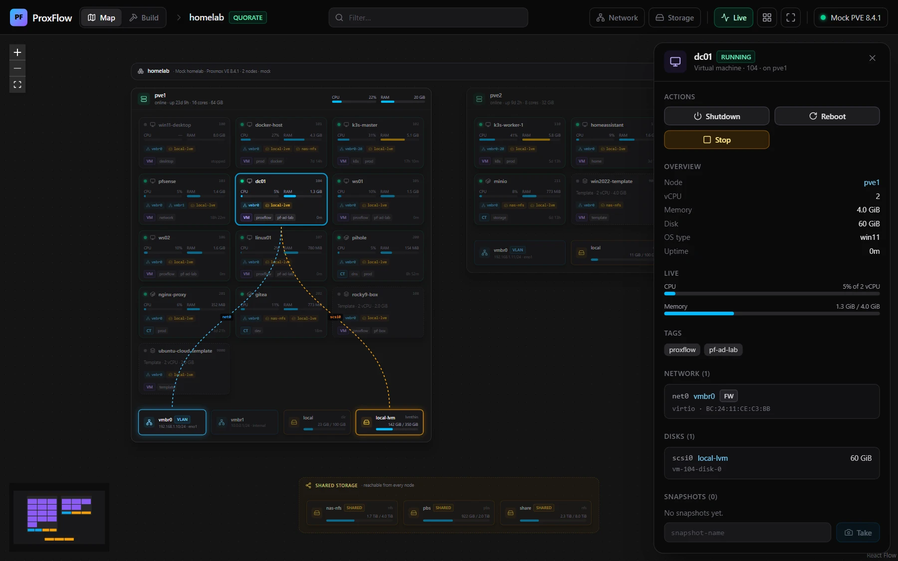
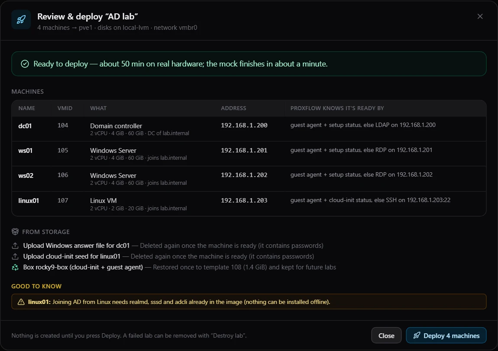
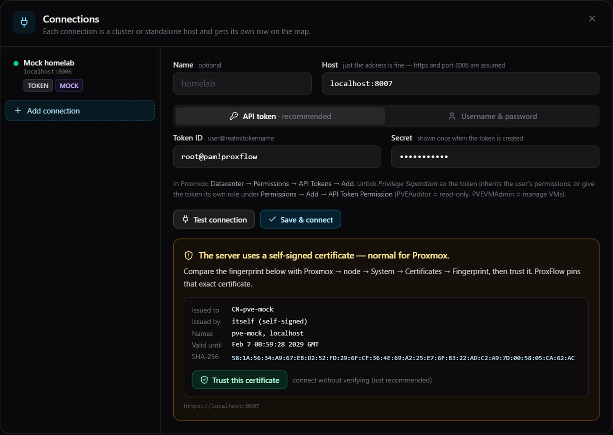

Draw the lab. ProxFlow builds it.
A map and lab builder for Proxmox VE. Put a domain controller, Windows and Linux servers, containers and nested ESXi on a canvas, and ProxFlow builds each one from the ISOs, boxes and templates already on your storage. It needs no internet.
- Project
- proxflow
- Title
- AD lab, as built
- Rev
- 0.1.0
- Sheet
- 1 of 1
- Scale
- NTS
- Runtime
- Node.js 24.22.2
- Drawn
- demo mode
- Zone
- —
What's in the zip
PF-02 · Parts list| Item | Part | What it is | Size |
|---|---|---|---|
| 1 | node\node.exe | The official Node.js 24.22.2 runtime for Windows | 89.6 MB |
| 2 | app\proxflow.mjs | The server and every library it uses, in one file | 2.6 MB |
| 3 | app\web\ | The web UI your browser opens | 0.7 MB |
| 4 | ProxFlow.cmd | Starts ProxFlow and opens your browser | 1 KB |
| 5 | ProxFlow-demo.cmd | The same, against a simulated Proxmox | 1 KB |
| 6 | README.txt, licenses | Setup notes, Node.js license, third-party notices | 0.3 MB |
- Right-click the zip, Properties, tick Unblock.
- Extract it anywhere. No installer, no admin rights.
- Double-click
ProxFlow.cmd. Your browser opens ProxFlow.
Windows 10 or Server 2016 and newer, x64, with Edge, Chrome or Firefox. ProxFlow-demo.cmd runs everything against a simulated Proxmox, so you can try a whole lab at home first.
Or from PowerShell:
irm https://github.com/Real-Fruit-Snacks/proxflow/releases/latest/download/proxflow-windows-x64.zip -OutFile proxflow.zip; Expand-Archive proxflow.zip .How a lab gets built
PF-03 · General notes- Nothing is downloaded. Every machine comes from ISOs, boxes (backups and templates) and disk images already on Proxmox storage, local or shared.
- The plan is checked before anything exists: permissions, storage, free addresses, names and passwords. Nothing is created until you press Deploy.
- A box stored as a backup is restored once and kept as a template tagged
pf-box. The next lab clones it instead of restoring it again. - Settings travel on a small generated CD: an answer file for Windows Setup, a cloud-init seed for Linux, a kickstart file for ESXi. It holds passwords, so it is ejected and deleted once the machine is ready.
- Readiness comes from the QEMU guest agent. A box without one is checked over SSH, RDP or LDAP on its static address instead.
- Destroy lab removes exactly what the deployment created, and keeps restored boxes for next time.
PF-04 · Equipment schedule
| Mark | Machine | Built from | Set up by | Ready when |
|---|---|---|---|---|
| DC | Domain controller | Windows Server 2019, 2022 or 2025 ISO | Unattended install, then a new AD forest | The agent reports the domain is up, or LDAP answers |
| WS | Windows Server | The ISO, or a Windows box or template | Unattended install, or a script sent through the guest agent | The agent reports it joined, or RDP answers |
| LX | Linux VM | A box, template or disk image | A cloud-init seed; realmd joins the domain | cloud-init reports done, or SSH answers |
| CT | Container | A container template or backup | Proxmox container settings | Proxmox reports its address |
| EX | ESXi host | The ESXi installer ISO | A kickstart CD and nested virtualization | HTTPS answers on its address |
The app
PF-05 · Details A–D, from demo mode





Connecting to Proxmox
PF-06 · Connection and options- In Proxmox, open Datacenter, Permissions, API Tokens and add one, for example
root@pam!proxflow. - Give it
PVEAuditoron/for the map. To build labs, give itPVEVMAdminon/andPVEDatastoreUseron your storages. - In ProxFlow, add the connection and press Test. A wrong port, an unknown name, a rejected token or a missing permission is named, with what to change.
- Compare the certificate's fingerprint with the node's System, Certificates page in Proxmox, then trust it. ProxFlow pins that exact certificate.
| Option | Does |
|---|---|
--port 8080 | Serves on another port. The default is 3001, or the next free one. |
--host 127.0.0.1 | Lets only this computer open ProxFlow. |
--data-dir <path> | Keeps connections and lab history elsewhere. The default is data next to ProxFlow.cmd. |
--demo | Uses the simulated Proxmox. |
PVE_URL | Adds a host from the environment, with PVE_TOKEN_ID and PVE_TOKEN_SECRET. |
PS C:\Tools\proxflow> .\ProxFlow-demo.cmd
ProxFlow 0.1.0 — DEMO MODE (simulated Proxmox)
Open: http://localhost:3001
Data: C:\Tools\proxflow\data\demo
Leave this window open while you use ProxFlow.What has been tested
PF-07 · Verification and open itemsVerified on
- Windows 11 Pro, running the release zip with its bundled Node.js 24.22.2.
- GitHub Actions
windows-lateston every release: a fresh extract with no Node.js on PATH, a 10-machine lab, and a read-only install folder. - The simulated Proxmox VE 8.4 API in demo mode: an AD forest, Windows and Linux boxes with and without the guest agent, containers, nested ESXi, and 37 connection checks.
Not yet tested on a real Proxmox host. Everything above ran against the simulated API.
Open items
- Reading the config inside backups, importing disk images (Proxmox 8.3+) and Proxmox 9's guest-agent permission names follow the documentation and haven't met real hardware yet.
- Nested ESXi types its boot option at the installer menu. If that is missed, press Shift+O in the console and add
ks=cdrom:/KS.CFG. - The Windows edition list assumes Microsoft's usual image order inside the ISO.
- A Linux box joins the domain only if
realmd,sssdandadcliare already in the image. - ProxFlow has no login of its own. On a shared network, start it with
--host 127.0.0.1.
| Rev | Date | Description |
|---|---|---|
| 0.1.0 | 2026-11-05 | First release: map, connections, lab builder, Windows zip. Download |